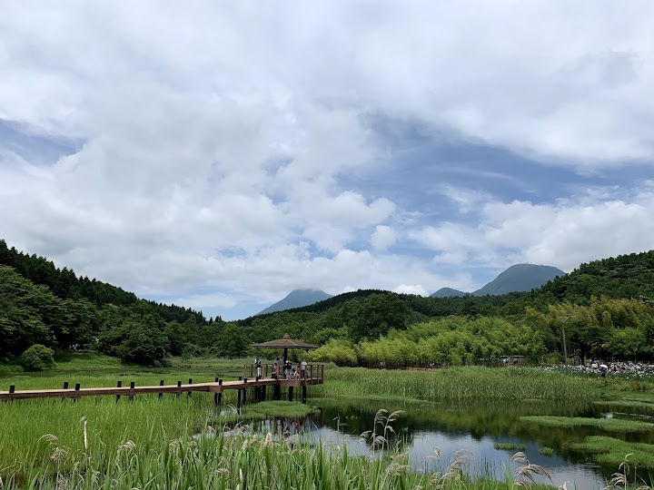
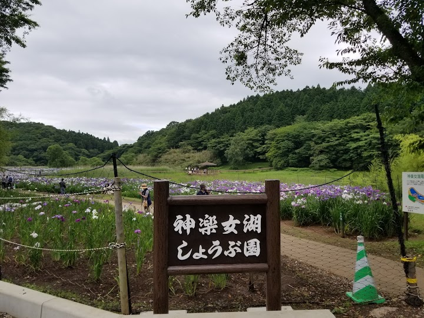
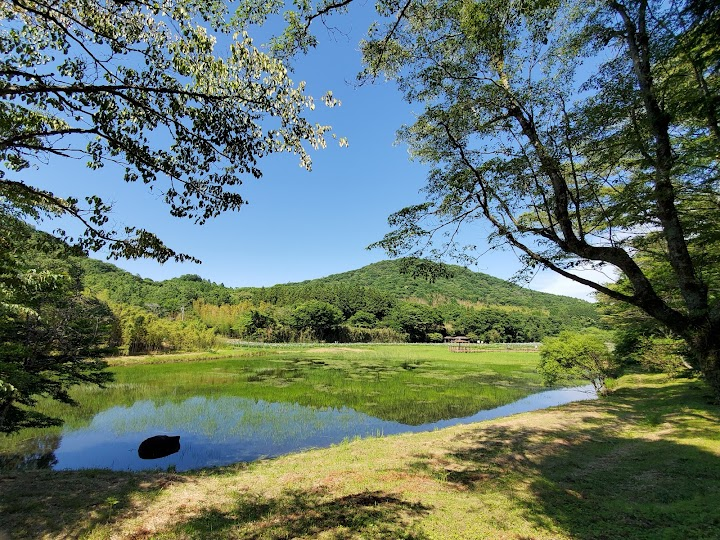
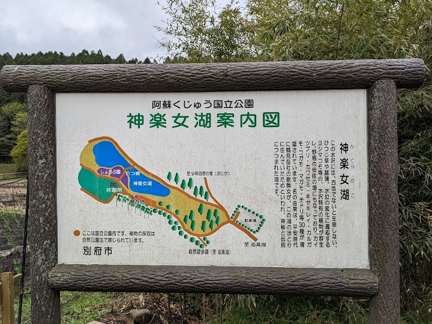
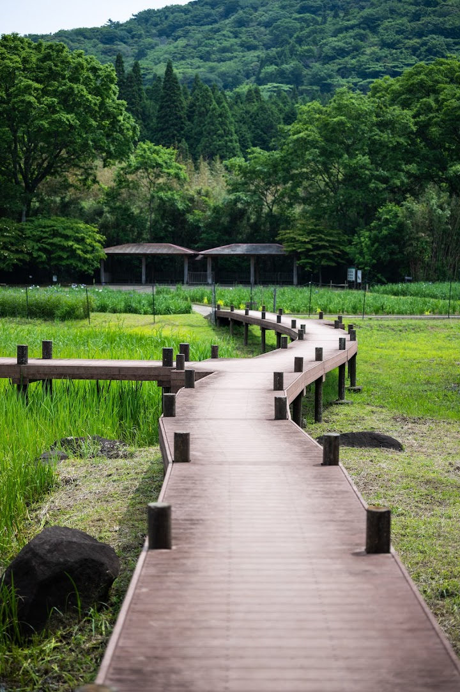

神楽女湖しょうぶ園
An iris garden beside Lake Kagurame near Beppu, known for its iris flower festival when the weather warms up. In December it is quiet and has no flowers, but the lake and the surroundings are still pleasant.
Open in Google Maps (street view, more photos and reviews there)






Visitor tips on finding it and getting there
Visited on Jun 23, 2019: I love Beppu one of the most exciting and nature places in Japan, there are a lot hot spring, Beppu is very famous for that. But also this great park full of beautiful flowers. You should try the soft ice cream at the parking lot, its super delicious.